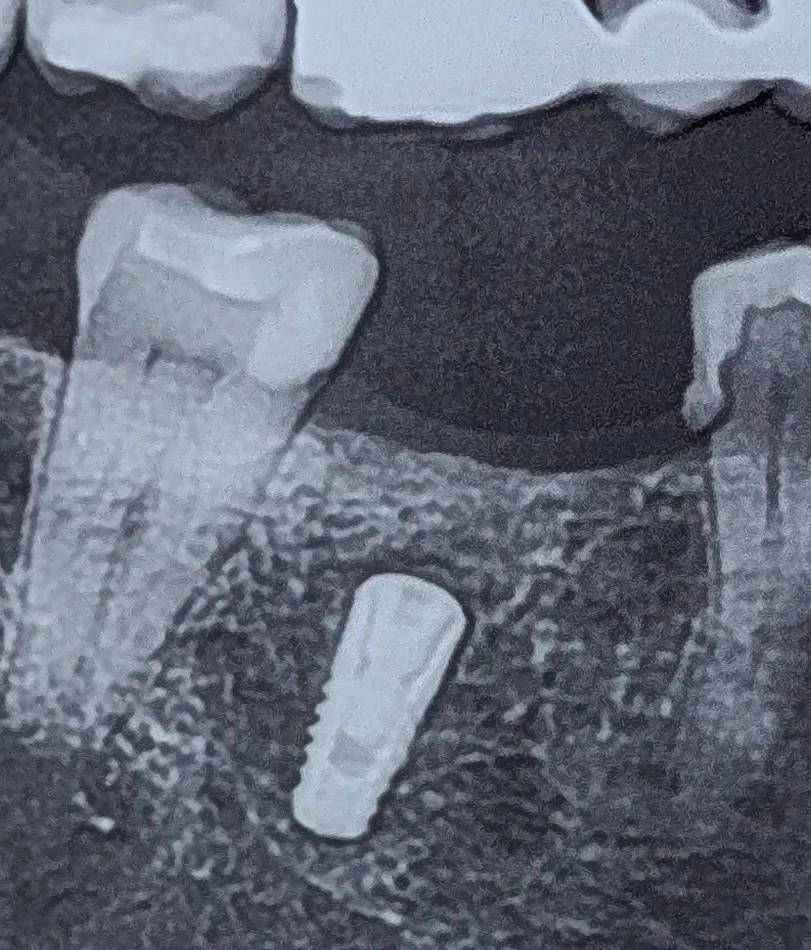

بیمار برای ویزیت پس از جراحی فیکسچر و بررسی ادامهٔ درمان پروتز ایمپلنت مراجعه کرده بود.
ایمپلنت در ساکت دندان کشیده شده و به صورت fresh socket قرار داده شده بود.
اینتگریشن صورت گرفته بود و در نگاه اول شرایط قابل قبول به نظر میرسید.
اما موقعیت آن—چند میلیمتر پایینتر از سطح استخوان— نکتهای بود که مسیر درمان را تغییر داد.
در اینجا سؤال اصلی مطرح میشود:
آیا قرارگیری ایمپلنت در استخوان، بهتنهایی برای ورود به فاز پروتز کافی است؟
در این کیس، عمق بیش از حد ایمپلنت باعث شده بود پلتفرم در موقعیتی بسیار اپیکال قرار بگیرد؛
و همین موضوع در فاز پروتز چالشهای متعددی ایجاد میکند.
از نظر دسترسی، این موقعیت باعث میشود مراحل پایهای پروتزی بهمراتب دشوارتر شوند.
قرار دادن، خارج کردن و بستن ایمپرشن کوپینگ یا اسکنبادی در چنین عمقی با محدودیت دید و دسترسی همراه است.
این موضوع میتواند دقت ثبت موقعیت ایمپلنت را تحت تأثیر قرار دهد و در نهایت به عدم تطابق پروتز منجر شود.
از طرف دیگر، عمق زیاد پلتفرم باعث میشود مارجین پروتز در موقعیتی عمیق و غیرقابل دسترس قرار بگیرد.
در رستوریشنهای سمنتشونده، این وضعیت کنترل و حذف کامل سمنت را دشوار میکند و میتواند ریسک عوارض پریایمپلنت را افزایش دهد.
در رستوریشنهای پیچشونده نیز این موقعیت ممکن است مسیر و زاویهٔ دسترسی به پیچ را محدود کند و گزینههای پروتزی را کاهش دهد.
از نظر بیومکانیکی نیز افزایش فاصلهٔ عمودی بین پلتفرم و سطح اکلوزال میتواند شرایطی ایجاد کند که تنش بیشتری به اجزای پروتزی وارد شود
و در بلندمدت ریسک لقی پیچ یا شکست اجزا را افزایش دهد.
نکته مهم این است که این موقعیت در بسیاری از موارد نتیجهٔ یک تصمیم آگاهانه نیست؛
بلکه ناشی از هدایت ناخودآگاه ایمپلنت به داخل فضای خالی ساکت است— جایی که آناتومی گذشته، جایگزین برنامهریزی پروتزی آینده میشود.
در این کیس، با توجه به مجموعهٔ این ملاحظات، ورود به فاز پروتز برای این ایمپلنت پذیرفته نشد.
این تصمیم نه بهدلیل شکست جراحی، بلکه بهدلیل عدم تطابق موقعیت ایمپلنت با الزامات پروتزی اتخاذ شد.
این تجربه یادآوری میکند:
قرارگیری صحیح ایمپلنت صرفاً به معنای قرار گرفتن در استخوان نیست؛
بلکه به معنای قرار گرفتن در موقعیتی است که بتواند یک پروتز قابل پیشبینی، قابل نگهداری و بیومکانیکی پایدار را پشتیبانی کند.
گاهی مشکل در آن چیزی نیست که دیده میشود؛
در آن چیزی است که در مرحلهٔ پروتز خود را نشان خواهد داد.